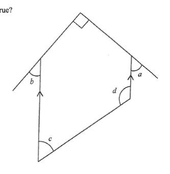

DSE 2023 · 卷二 · Q18
平行線之間的角
幾何 · 平行線與截線 · 選擇題
題目
根據圖中所示，下列哪項必定正確？ I. $a+b=90^\circ$ II. $c+d=180^\circ$ III. $a+b+c=d$
A.
只有 I 及 II
B.
只有 I 及 III
C.
只有 II 及 III
D.
I、II 及 III

原題附圖
題解
a
b
c
d
平行線 ⟹ 內錯角、同旁內角
圖：兩平行線被兩條截線所截，標出 $a$、$b$、$c$、$d$（題解繪）
第 1 步
看清圖中的平行線
$AD\parallel GH\parallel BC$；$EG$ 與 $CD$ 是截線。$a=\angle GAD$，$b=\angle FBG$，$c=\angle ECB$，$d=\angle ADC$。
第 2 步
檢驗 I
同位角
\(GH\parallel AD\Rightarrow \angle AGH=a\)
兩平行線被截線所截，同位角相等。
$\angle AGH=a$（同位角，$GH\parallel AD$），$\angle BGH=b$（同位角，$GH\parallel BC$）。而 $AG\perp BG$（正方形的直角），即 $\angle AGB=90^\circ$，所以\[ a+b=90^\circ \]I 正確。
第 3 步
檢驗 II
同旁內角
\(AD\parallel BC\Rightarrow \angle BCD+\angle ADC=180^\circ\)
兩平行線被截線 $CD$ 所截，同旁內角互補。
$\angle BCD=c$，$\angle ADC=d$，故\[ c+d=180^\circ \]II 正確。
第 4 步
檢驗 III：舉反例
取 $a=50^\circ$、$b=40^\circ$、$c=100^\circ$、$d=80^\circ$（滿足 I、II），則\[ a+b+c=190^\circ\neq 80^\circ=d \]III 不一定成立。
第 5 步
結論
只有 I 及 II 必定正確，答案 A。
答案
A
（只有 I 及 II）
練習
同類新題
題目.
若 $L_1\parallel L_2$，一條截線與 $L_1$ 成 $65^\circ$ 角，求同旁內角中較大的一個。
顯示題解
第 1 步.
同位角也是 $65^\circ$
第 2 步.
同旁內角互補：$180^\circ-65^\circ$
答案：$115^\circ$
‹ 上一題
目錄
下一題 ›